Transforming raw Empatica E4 wearable sensor data into machine-learning models that distinguish high-stress from low-stress conditions using LOSO cross-validation.
We investigate whether physiological signals recorded by the Empatica E4 wrist-worn device can reliably distinguish high-stress from low-stress states across participants.
Each protocol includes multiple timed stages marked by event tags.
Script 01 loads all sensor recordings, verifies participant availability, handles split sessions and duplicate tails, and validates signal integrity.
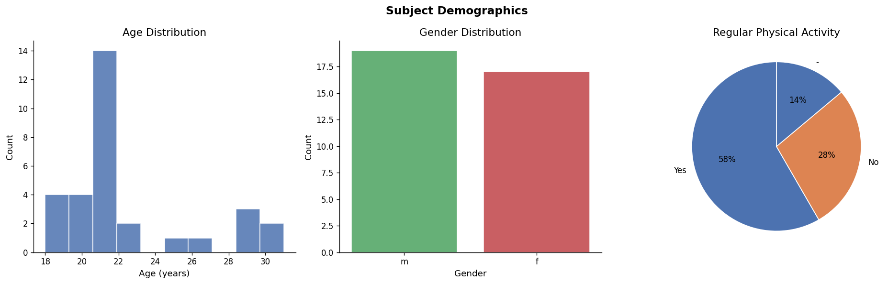
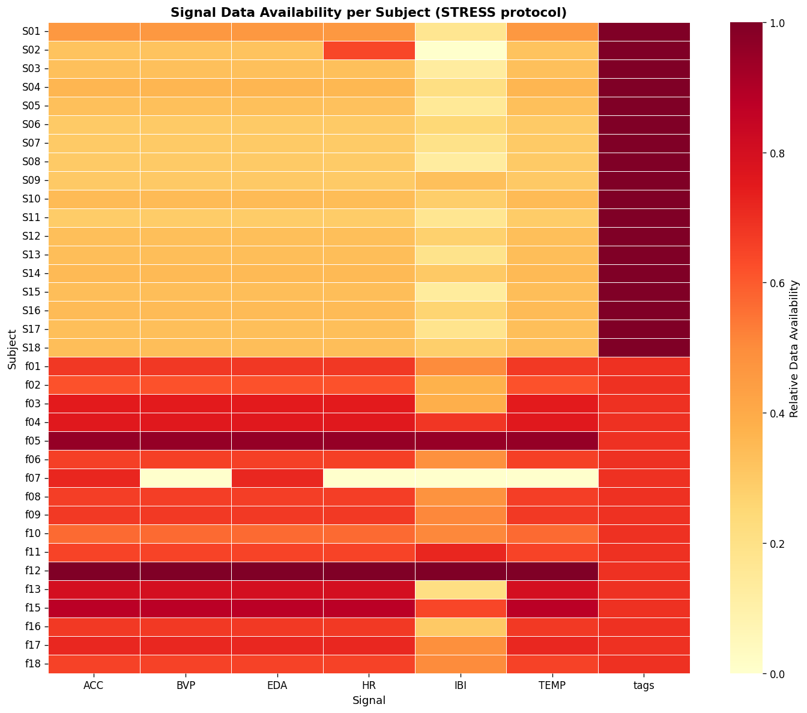
Script 02 explores sensor data using statistical summaries and visualisations — helping identify signal distributions, missing values, and stress-related patterns.
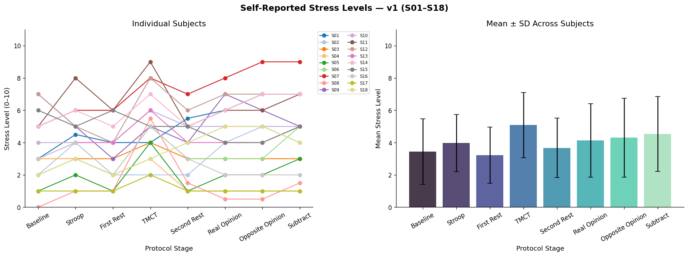
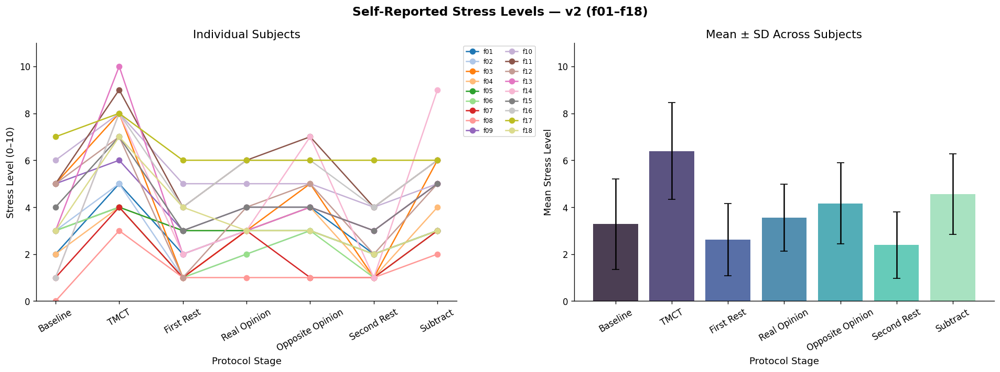
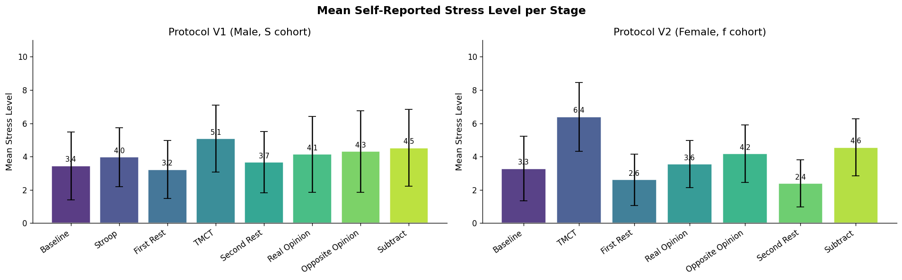
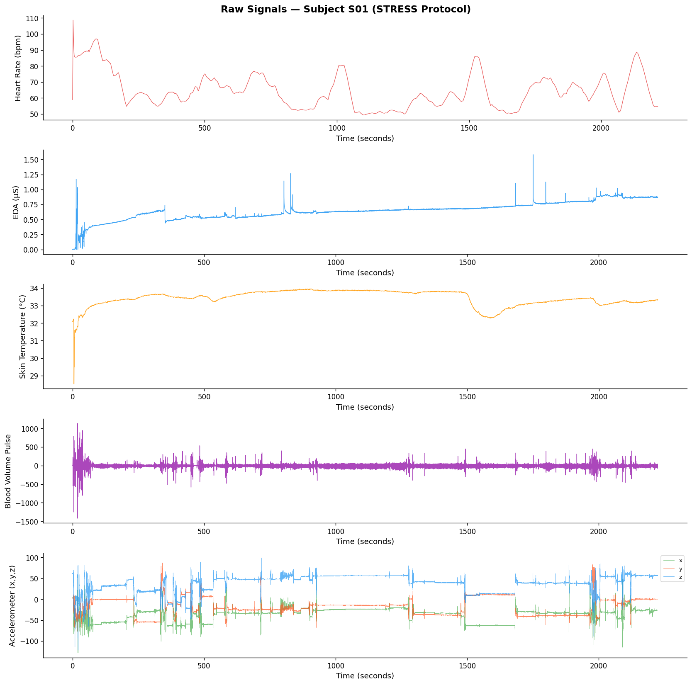
Raw signals are cleaned, resampled to 1 Hz, and segmented into stage-level windows using event tags from the protocol.
Script 03 converts raw signals into numerical features across 5 physiological domains. The resulting feature table contains 263 labelled rows from 35 unique participants.
| Domain | Features | Count | Completeness |
|---|---|---|---|
| Heart Rate (HR) | mean, std, min, max, range, rmssd_approx | 6 | 97.3% |
| Electrodermal (EDA) | mean, std, slope, range, scl_mean, scr_count | 6 | 100% |
| Temperature | mean, std, slope | 3 | 97.3% |
| Acceleration | mean, std, max | 3 | 100% |
| HRV (IBI-based) | mean_ibi, sdnn, rmssd, pnn50, lf_hf_ratio | 5 | 80.6% |
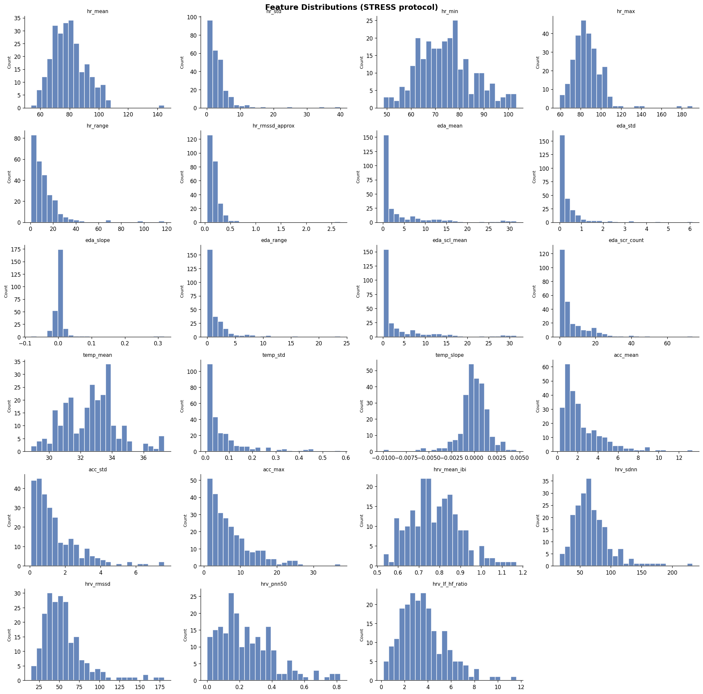
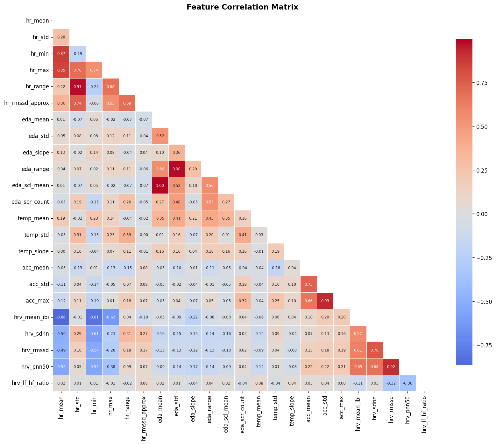
Stress ratings are binarised (≥5 = High, <5 = Low). Script 04 analyses stage-level differences using statistical tests. TMCT and Subtract stages show significantly elevated stress.
| Stage | Mean (V1) | Cohen's d | Significant? |
|---|---|---|---|
| Baseline | 3.44 | 0.000 | — |
| Stroop | 3.97 | 0.277 | No |
| TMCT | 5.08 | 0.809 | Yes (p=0.004) |
| Subtract | 4.53 | 0.497 | Yes (p=0.024) |
| Real Opinion | 4.14 | 0.322 | No (p=0.079) |
| Opposite Opinion | 4.31 | 0.383 | No (p=0.084) |
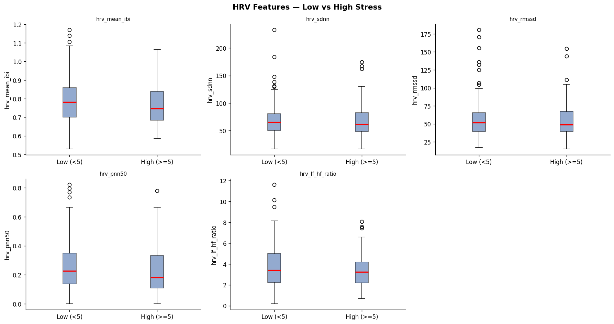
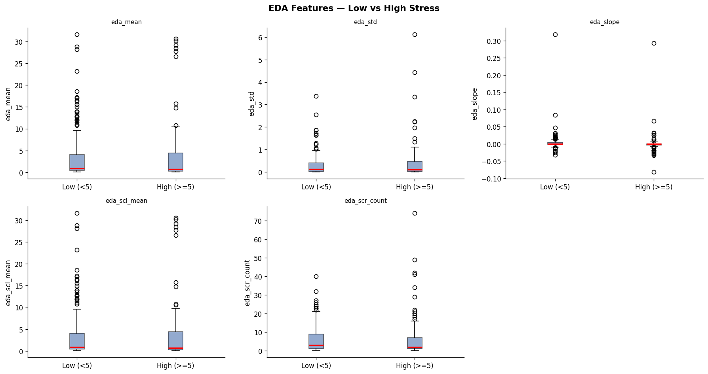
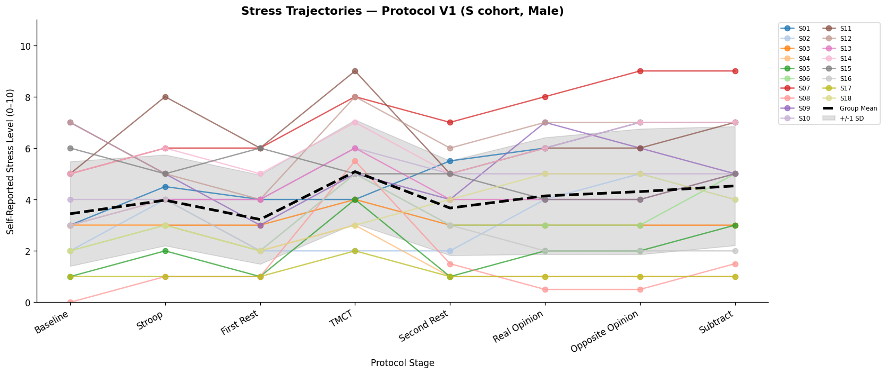
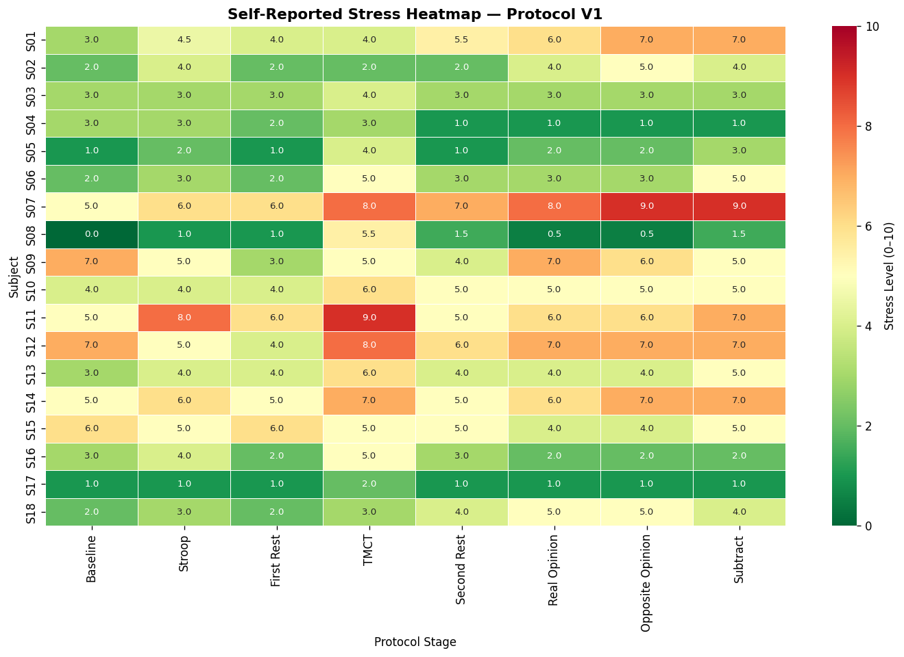
Two classifiers are trained with a scikit-learn pipeline: median imputation → StandardScaler → classifier. Both use class_weight="balanced" to handle imbalanced labels.
Leave-One-Subject-Out evaluation: each of 35 subjects is held out once for testing, training on all others. This prevents data leakage between participants.
| Metric | Low Stress | High Stress | Overall |
|---|---|---|---|
| Precision | 0.57 | 0.31 | 0.44 (macro) |
| Recall | 0.60 | 0.29 | 0.44 (macro) |
| F1-Score | 0.59 | 0.30 | 0.44 (macro) |
| Accuracy | 47.91% | ||
| Metric | Low Stress | High Stress | Overall |
|---|---|---|---|
| Precision | 0.60 | 0.36 | 0.48 (macro) |
| Recall | 0.59 | 0.37 | 0.48 (macro) |
| F1-Score | 0.60 | 0.36 | 0.48 (macro) |
| Accuracy | 50.57% | ||
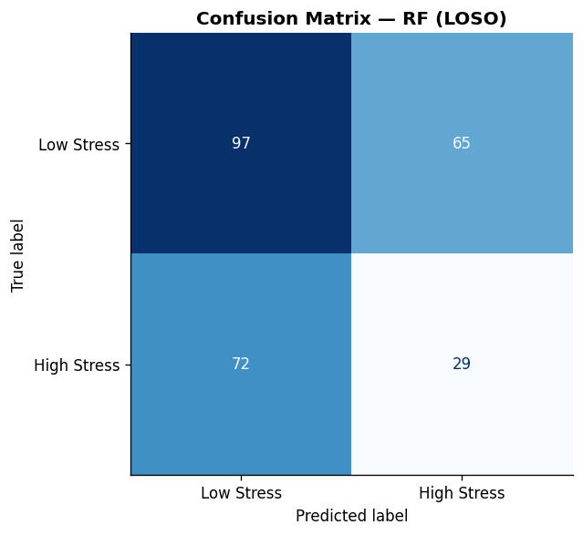
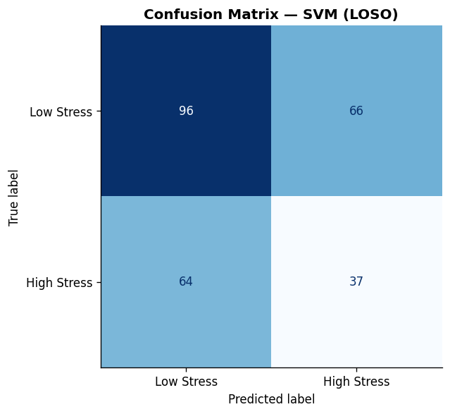
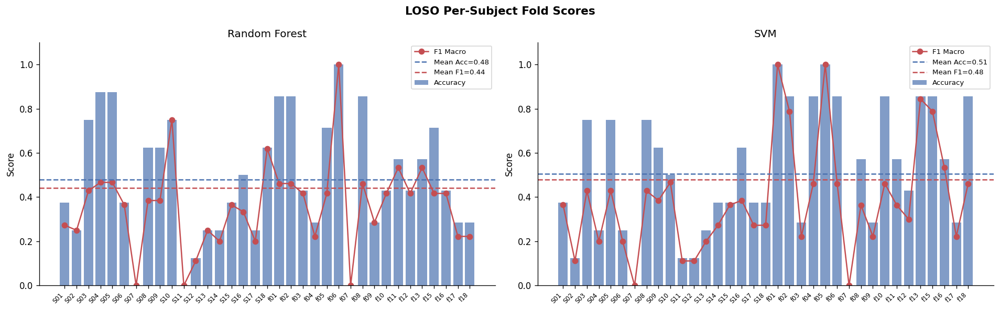
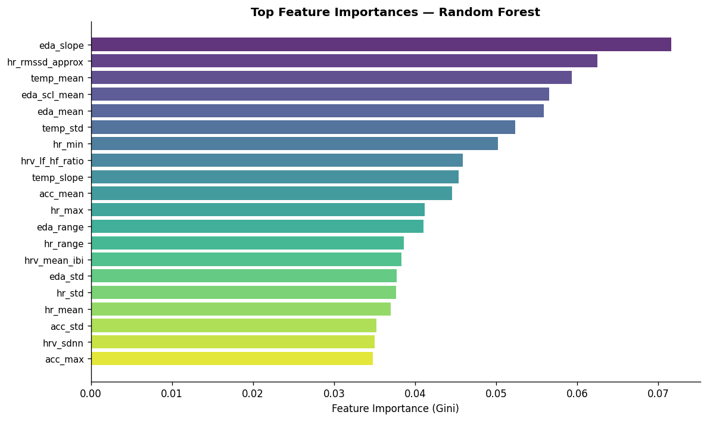
SVM (RBF) outperforms Random Forest on both accuracy and F1-macro under LOSO evaluation. The top predictive features are EDA slope, HR RMSSD, and temperature mean.
| # | Feature | Importance | Domain |
|---|---|---|---|
| 1 | eda_slope | 0.0716 | EDA |
| 2 | hr_rmssd_approx | 0.0625 | HR |
| 3 | temp_mean | 0.0593 | TEMP |
| 4 | eda_scl_mean | 0.0565 | EDA |
| 5 | eda_mean | 0.0558 | EDA |
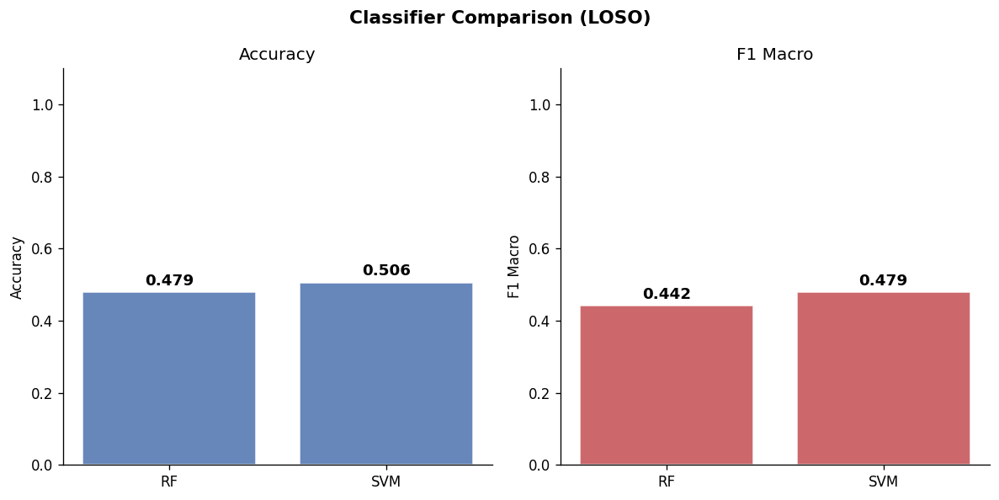
The project follows a modular Python pipeline architecture with separate scripts for each phase, reusable source modules, and automated logging.
wearable-data/ ├── scripts/ │ ├── 01_load_and_verify.py │ ├── 02_eda.py │ ├── 03_feature_engineering.py │ ├── 04_stress_analysis.py │ └── 05_model_evaluation.py ├── src/ │ ├── loader.py │ ├── preprocessing.py │ ├── features.py │ └── models.py ├── data/ features/ processed/ ├── reports/figures/ (20 plots) ├── logs/ (5 step logs) └── run_project.bat
Load all sensor CSVs, validate participants, handle split sessions & duplicates
Statistical summaries, demographics, signal quality heatmaps, stress rating charts
Extract 23 features from HR, EDA, TEMP, ACC, IBI domains → stress_features.csv
Stage comparisons, Cohen's d, p-values, stress trajectories, heatmaps
RF + SVM with LOSO CV, confusion matrices, feature importance, comparison plots
This project successfully demonstrates a complete end-to-end pipeline — from raw wearable sensor data through feature engineering to LOSO-validated machine learning classification. While the moderate accuracy reflects the genuine difficulty of person-independent stress classification from wrist-worn sensors, the pipeline provides a solid foundation for future improvements with larger datasets, advanced models, and real-time deployment.
Wearable Stress Detection Using Physiological Signals — A complete ML pipeline from sensor data to LOSO-evaluated classification.